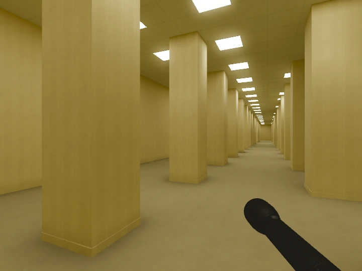
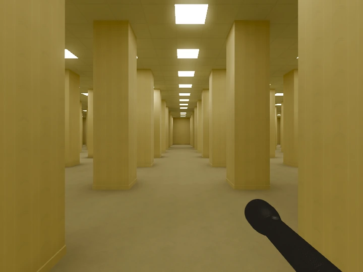
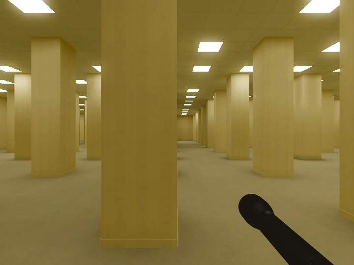

Un autre chemin, à chaque fois.
Une nouvelle graine à chaque exploration. Des passages resserrés aux champs de piliers de 72,5 mètres, les proportions changent et les ramifications se multiplient.
PROTOTYPE JOUABLE · WINDOWS & LINUX
Un bourdonnement. De la moquette.
Des pièces qui n’en finissent pas.
Et vous, quelque part entre les murs.
Windows & Linux x64 · Gratuit · Sans installation

Hors Plan explore ce sentiment d’être arrivé dans un endroit qui ne devrait pas exister. Un prototype consacré aux espaces, à la lumière et au plaisir inquiétant de s’y perdre.
Une nouvelle graine à chaque exploration. Des passages resserrés aux champs de piliers de 72,5 mètres, les proportions changent et les ramifications se multiplient.
Les néons clignotent, leur lumière réagit. Votre lampe torche révèle les murs et les angles, jusque dans les zones peu éclairées.
Déplacez-vous librement, regardez autour de vous, courez. Le prototype actuel privilégie l’exploration : pas encore d’entités ni de système de survie.


02 — PRENDRE SES REPÈRES
Clavier et souris. Déplacements libres.
Commandes adaptées aux positions AZERTY et QWERTY.
DISPONIBLE MAINTENANT
Le Niveau 0 vous attend. Téléchargez le prototype
et choisissez votre première direction.
Windows : ZIP · Linux : TAR.GZ · x64 · Prototype
Prototype non signé. Pas de sauvegarde de partie pour le moment. Linux : si nécessaire, autorisez l’exécution du fichier dans ses propriétés. Le jeu se lance sur votre PC ; ce site reste la vitrine.
Notes de version et fichiers